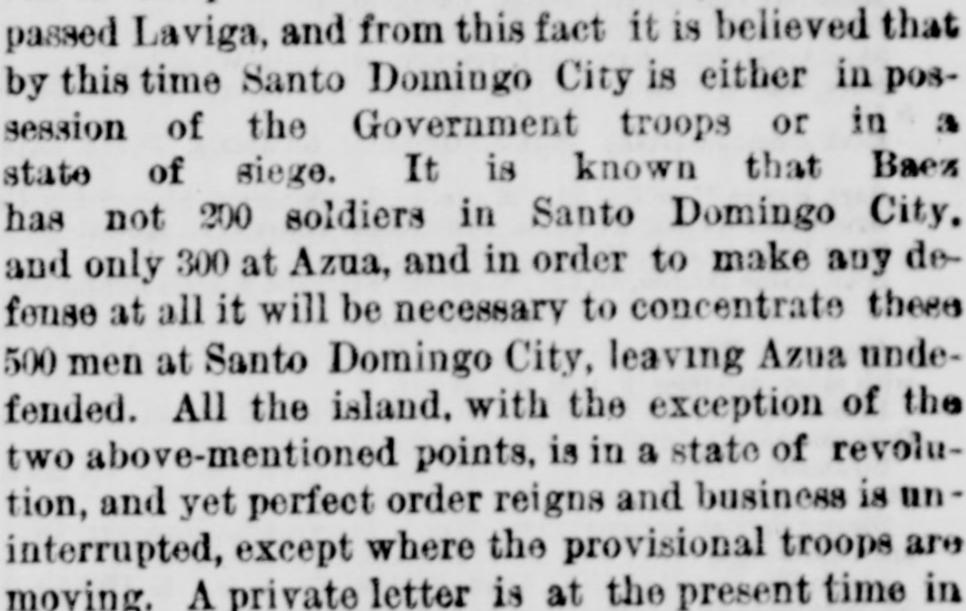
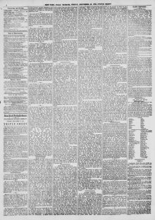

See the full pageVer la página completaOriginal title in EnglishTítulo original en inglés
Baez Deposed.Baez depuesto.
The provisional government holds Santo Domingo City with fewer than 200 soldiers and Azua with 300, and would have to concentrate those 500 men in the capital to defend it, leaving Azua exposed. The rest of the island is in revolution, though business remains uninterrupted except where provisional troops move. A letter from the American consul says Puerto Plata decided against Báez and his followers became despondent, while official documents state the government wants to fulfill the Samaná Bay Company treaty and guarantee the rights granted under it.El gobierno provisional sostiene la ciudad de Santo Domingo con menos de 200 soldados y Azua con 300, y tendría que concentrar esos 500 hombres en la capital para defenderla, dejando Azua expuesta. El resto de la isla está en revolución, aunque los negocios siguen sin interrupción salvo donde se mueven las tropas provisionales. Una carta del cónsul estadounidense dice que Puerto Plata se pronunció contra Báez y sus seguidores cayeron en el desaliento, mientras documentos oficiales afirman que el gobierno quiere cumplir el tratado con la Compañía de la Bahía de Samaná y garantizar los derechos otorgados en él.
FULL TEXT:TRADUCCIÓN:
Tomas Cocco be the Secretary of State, Interior, Police, Agriculture, and Foreign Relations.Tomas Cocco sea el Secretario de Estado, Interior, Policía, Agricultura, y Relaciones Exteriores.
Art. II.—Celestine Lopez be the Secretary of Justice and Public Instruction.Art. II.—Celestine Lopez sea el Secretario de Justicia e Instrucción Pública.
Art. III.—Ildefonso Mella Castillo be the head of the Bureau of Commerce.Art. III.—Ildefonso Mella Castillo sea el jefe de la Oficina de Comercio.
Art. IV.—Gen. Pablo Lopez Villanueva be Secretary of War and Navy.Art. IV.—El general Pablo Lopez Villanueva sea Secretario de Guerra y Marina.
Done in the City of San Felipe de Puerto Plata, 30th day of November, 1873. IGNACIO M. GONZALES.Hecho en la Ciudad de San Felipe de Puerto Plata, el día 30 de noviembre de 1873. IGNACIO M. GONZALES.
This prompt action on the part of the leaders inspired the people with confidence, and within 14 days from the outbreak of the revolution not only was the Government formed, but 4,000 men under arms and on their way to the capital. On the 6th of the present month these troops had already passed La Vega, and from this fact it is inferred that by this time Santo Domingo City is either in possession of the Government troops or in a state of siege. It is known that Baez has not 200 soldiers in Santo Domingo City, and only 300 at Azua, and in order to make any defense at all it will be necessary to concentrate the 500 men at Santo Domingo City, leaving Azua undefended. All the island, with the exception of the two above-mentioned points, is in a state of revolution, and yet perfect order reigns and trade is uninterrupted, except where the provisional troops are moving. A private letter is at the present time in this city from the American Consul at Santo Domingo City, and in which it was stated that as soon as it was known that Puerto Plata had declared against Baez, a general despondency prevailed among his followers.Esta pronta acción por parte de los jefes inspiró confianza al pueblo, y dentro de 14 días desde el estallido de la revolución no solo estaba formado el Gobierno, sino 4,000 hombres en armas y en camino hacia la capital. El 6 del presente mes estas tropas ya habían pasado La Vega, y de este hecho se infiere que para este momento la ciudad de Santo Domingo está o en posesión de las tropas del Gobierno o en estado de sitio. Se sabe que Báez no tiene 200 soldados en la ciudad de Santo Domingo, y solo 300 en Azua, y para hacer defensa alguna será necesario concentrar los 500 hombres en la ciudad de Santo Domingo, dejando Azua indefensa. Toda la isla, con la excepción de los dos puntos arriba mencionados, está en estado de revolución, y sin embargo reina un orden perfecto y el comercio no se interrumpe, excepto donde las tropas provisionales se están moviendo. Una carta privada está en el presente momento en esta ciudad del Cónsul estadounidense en la ciudad de Santo Domingo, y en la cual se afirmaba que tan pronto como se supo que Puerto Plata se había declarado contra Báez, un abatimiento general prevaleció entre sus seguidores.
It is understood that the Provisional Government is not opposed to the treaty that has been made with the Samana Bay Company, but is extremely desirous of fulfilling every stipulation thereof.Se entiende que el Gobierno Provisional no se opone al tratado que se ha hecho con la Compañía de la Bahía de Samaná, sino que está extremadamente deseoso de cumplir cada estipulación del mismo.
In support of this statement, official documents are reported to be already in this city, informing the Company of the favorable consideration of the Provisional Government and guaranteeing them all the rights granted under the treaty.En apoyo de esta declaración, se informa que ya están en esta ciudad documentos oficiales, informando a la Compañía de la consideración favorable del Gobierno Provisional y garantizándoles todos los derechos otorgados bajo el tratado.
New-York Tribune. New York, December 19, 1873. Page 6.